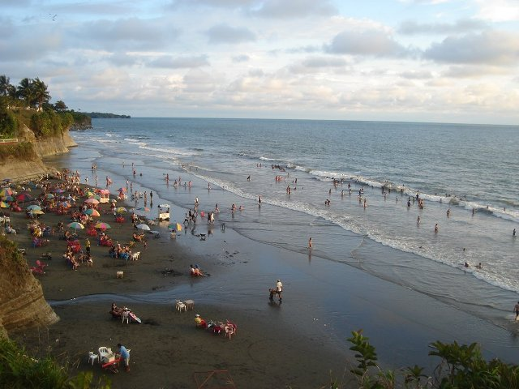
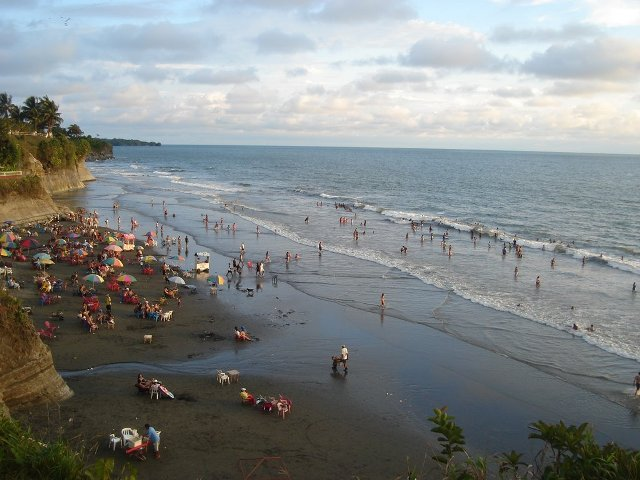

PodCast - Página Personal
Me presento, soy Juan Camilo Gamboa Riascos, una persona afrocolombiana, soy estudiante de la Institución Educativa Teofilo Roberto Potes, del grado 11-5. Soy alguien amable, respetuoso, gracioso, con carisma hacia las personas, y además humilde, me gusta mis raices, de donde nací.
PodCast
Preguntas y Respuestas
¿Se cree usted afro? ¿Por qué?
Sí, me considero una persona afrodescendiente porque reconozco que mi historia, mi cultura y mis raíces provienen de los pueblos africanos que fueron traídos a América y que con el paso del tiempo construyeron comunidades llenas de resistencia, sabiduría y fortaleza. Ser afro no solo se trata del color de piel, sino de una identidad que honra las luchas de nuestros antepasados, su forma de ver el mundo, su alegría, sus valores comunitarios y su amor por la libertad.
¿Cómo creo mi identidad afro?
Mi identidad afro se construye a través del conocimiento y el orgullo de mis raíces. Se forma al valorar mi historia, mi cultura, mi cabello, mi color de piel, mi forma de hablar, mi música, mis tradiciones y la manera en que me relaciono con los demás. También se fortalece cuando aprendo sobre los aportes de los afrodescendientes a la sociedad y cuando rechazo cualquier forma de discriminación o racismo. Crear mi identidad afro es un proceso constante de amor propio, de memoria y de reconocimiento.
¿Cómo fortalece su identidad?
Fortalezco mi identidad afro participando en actividades culturales, aprendiendo sobre la historia de mi comunidad, escuchando a los mayores y defendiendo mis derechos. También la fortalezco al valorar mis raíces, al sentir orgullo por mi cabello, mis rasgos, mi forma de ser y al respetar las tradiciones de mi pueblo. Cada vez que me expreso con libertad y sin vergüenza de quién soy, mi identidad afro se hace más fuerte.
¿Cómo me auto percibo?
Me autopercibo como una persona valiente, orgullosa de sus raíces y consciente de su valor. Me veo como parte de una comunidad que lucha cada día por el respeto, la igualdad y la justicia. Me considero alegre, trabajadora y con un gran sentido de pertenencia hacia mi cultura afrocolombiana.
¿Qué cosas no toleraría y por qué?
No toleraría el racismo, la discriminación, la injusticia ni el irrespeto hacia mi cultura. Estas actitudes van en contra de los valores humanos y del derecho que todos tenemos a vivir con dignidad. No aceptaría que alguien trate de menospreciar a otra persona por su color de piel, su origen o su forma de vivir, porque creo firmemente que la diversidad es lo que enriquece al mundo.
¿Conoce algo de la Ley 70?
Sí, la Ley 70 de 1993 es una norma muy importante para las comunidades afrocolombianas, ya que reconoce nuestros derechos colectivos sobre la tierra, la cultura y la identidad. Esta ley garantiza la protección de los territorios ancestrales, promueve la participación en las decisiones del país y defiende el respeto por nuestras costumbres, tradiciones y formas de vida. Fue una gran conquista del pueblo afro después de muchos años de lucha por la igualdad y el reconocimiento.
¿A qué se le llama ancestralidad?
La ancestralidad se refiere a todo lo que proviene de nuestros antepasados: sus conocimientos, creencias, valores, costumbres, espiritualidad y formas de relación con la naturaleza. Es la sabiduría que se transmite de generación en generación y que nos enseña a mantener el equilibrio con el entorno, a respetar la vida y a mantener viva nuestra cultura. La ancestralidad es lo que nos conecta con quienes fuimos y nos guía en lo que somos hoy.
Mi territorio y su importancia: Buenaventura
Buenaventura es mucho más que un puerto; es un territorio lleno de historia, cultura y vida. Es un lugar donde el mar se une con los ríos, donde la selva abraza la ciudad y donde la gente conserva un espíritu fuerte y solidario. Para nosotros, el territorio no es solo una porción de tierra, sino un espacio de identidad, memoria y resistencia.
En Buenaventura se siente el latido de la cultura afro en la música del currulao, en la gastronomía, en los bailes, en las fiestas y en la forma de hablar. Este territorio es importante porque nos brinda recursos naturales, pero también porque es el hogar donde nuestras raíces se mantienen vivas. Cuidar Buenaventura es cuidar nuestra historia, nuestra familia y nuestro futuro.
Amar el territorio es reconocer que de él venimos y que sin él no seríamos lo que somos. Por eso, debemos protegerlo del abandono, la contaminación y la violencia, trabajando unidos para que siga siendo símbolo de orgullo afrocolombiano.
Galería


 
